Falc AI
An AI-powered store analytics platform. I helped turn complex data and administrative workflows into a clearer interface for understanding store performance and managing team access.

Overview
Falc AI brings store analytics into a digital workspace, helping teams explore performance data and understand what is happening across their retail operations.
My design work focused on making that information easier to navigate and act on. Alongside the analytics experience, I worked on user management to give the platform a consistent approach to everyday administration.
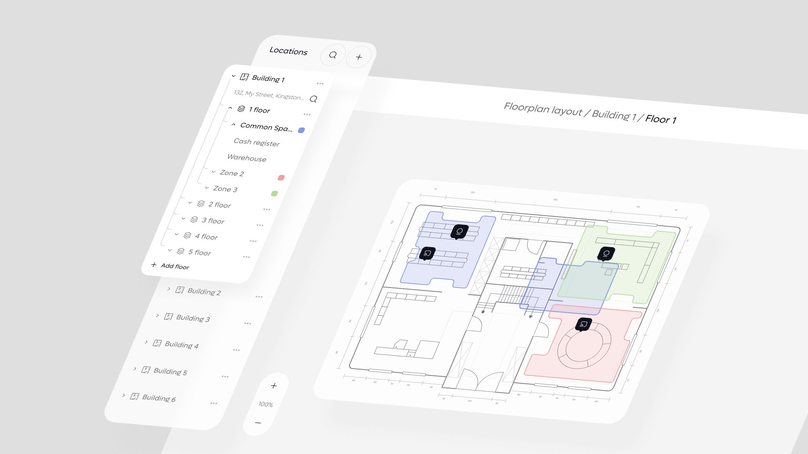
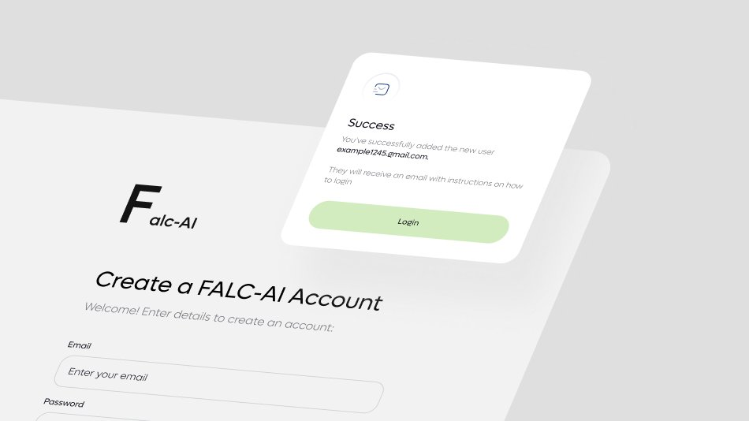
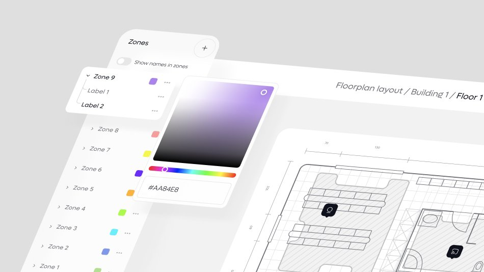
My role
As a Product Designer, I translated product requirements into structured workflows and detailed interfaces. My focus was on connecting data-heavy screens with clear navigation, readable layouts, and consistent interaction patterns.
- Organized analytics interfaces around clear information hierarchy.
- Designed user management workflows for administering team access.
- Established reusable interface patterns across product screens.
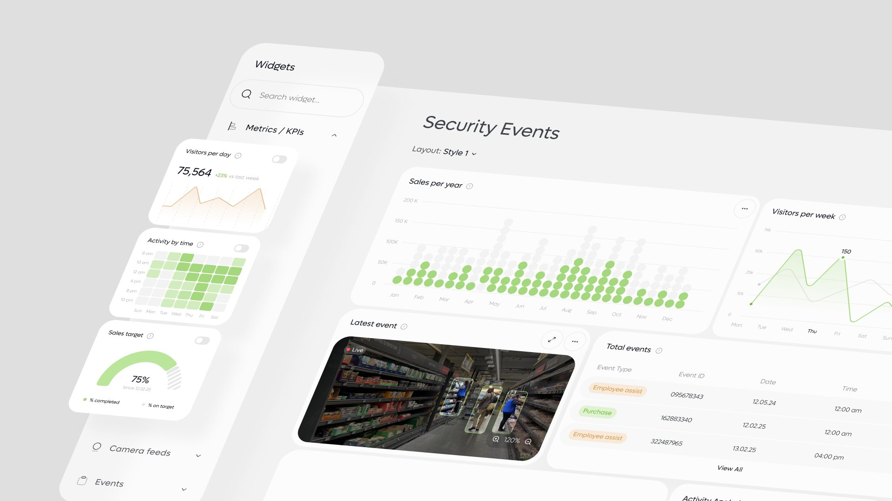
Challenge
Store analytics can present a large amount of information at once. Without a clear hierarchy, users have to spend time interpreting the interface before they can interpret the data.
The challenge was to make analytical screens easier to scan while giving administrative tasks, such as user management, the same level of clarity and attention.
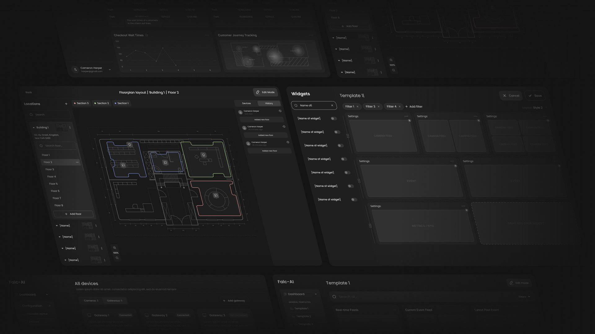
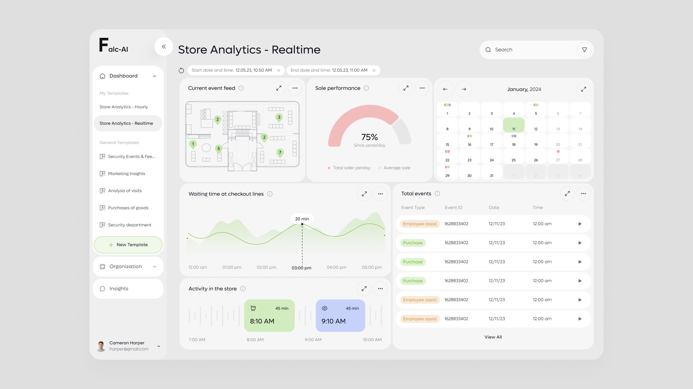
Approach
I focused on how users move from an overview to the details they need. Clear grouping, consistent controls, and deliberate visual hierarchy helped organize dense information into more manageable screens.
For user management, I applied the same principles to make account information and available actions easy to distinguish. Shared interface patterns connected these workflows with the wider product.
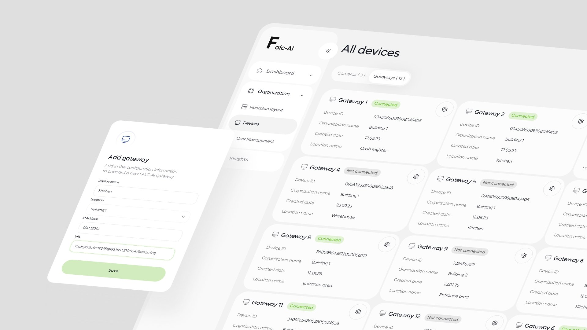
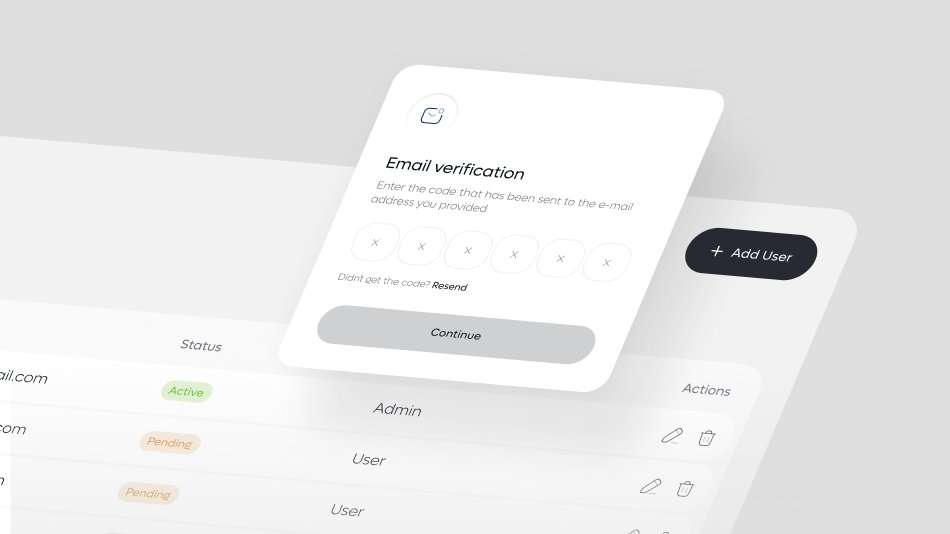
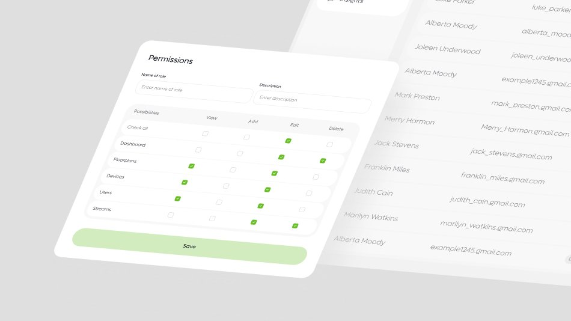
Outcome
My contribution gave Falc AI a more structured interface for exploring store analytics and managing users. The designs made key information more prominent and brought greater consistency to navigation, controls, and actions.
This established a cohesive foundation for extending the product as new analytical and administrative needs emerged.
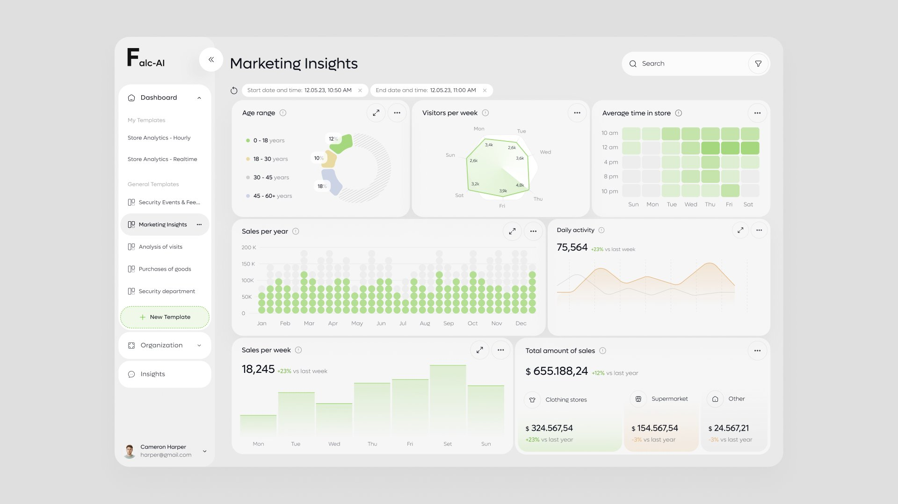
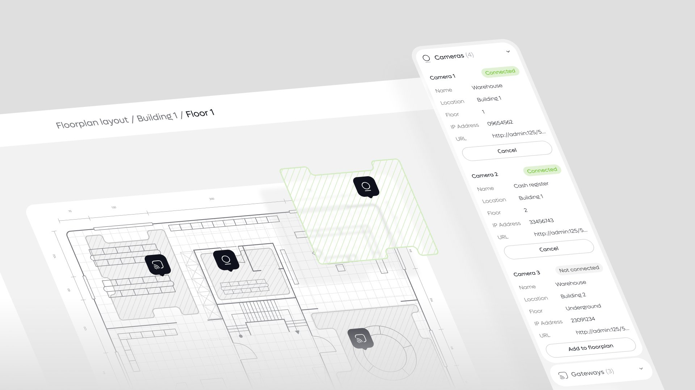
See the live product
Visit falc-ai.com (opens in a new tab)